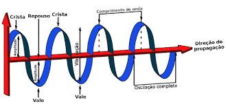
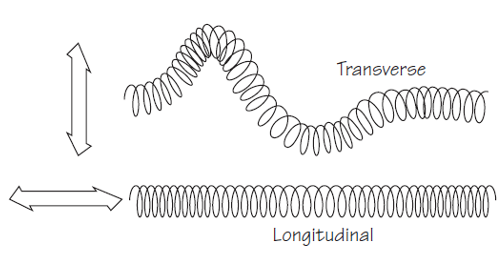

Propriedades das Ondas
Para caracterizar as ondas usamos as seguintes grandezas:
Amplitude: corresponde à altura da onda, marcada pela distância entre o ponto de equilíbrio
(repouso)
da
onda até a crista. Note que a “crista” indica o ponto máximo da onda, enquanto o “vale”, representa a ponto
mínimo.
Comprimento de onda: representado pela letra grega lambda (λ), é a distância entre dois
vales ou duas
cristas sucessivas.
Velocidade: representado pela letra (v), a velocidade de uma onda depende do meio em que
ela está se
propagando. Assim, quando uma onda muda seu meio de propagação, a sua velocidade pode mudar.
Frequência: representada pela letra (f), no sistema internacional a frequência é medida em
hertz (Hz)
e corresponde ao número de oscilações da onda em determinado intervalo de tempo. A frequência de uma onda
não depende do meio de propagação, apenas da frequência da fonte que produziu a onda.
Período: representado pela letra (T), o período corresponde ao tempo de um comprimento de
onda. No
sistema internacional, a unidade de medida do período é segundos (s).

Tipos
Quanto à natureza, há dois tipos de ondas:
Ondas Mecânicas: para que haja propagação, as ondas mecânicas necessitam de um meio
material, por
exemplo, as ondas sonoras e as ondas em uma corda.
Ondas Eletromagnéticas: nesse caso, não é necessário que haja um meio material para que a
onda se
propague, por exemplo, as ondas de rádio e a luz.

Classificação
Segundo a direção de propagação das ondas, elas são classificadas em:
Ondas Unidimensionais: as ondas que se propagam em uma direção.
Exemplo: ondas em uma corda.
Ondas Bidimensionais: as ondas que se propagam em duas direções.
Exemplo: ondas se propagando na superfície de um lago.
Ondas Tridimensionais: as ondas que se propagam em todas as direções
possíveis.
Exemplo: ondas sonoras.